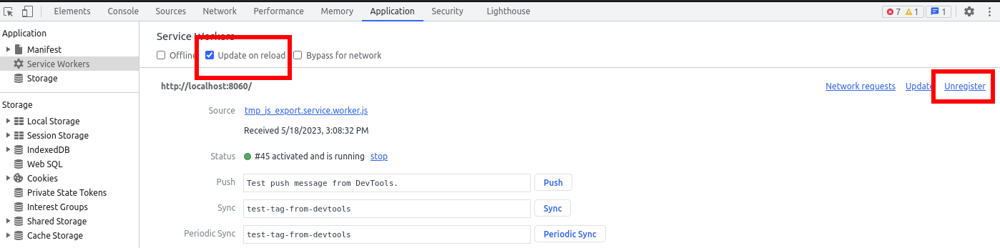

Exporting for the Web
See also
This page describes how to export a Godot project to HTML5. If you're looking to compile editor or export template binaries from source instead, read Compiling for the Web.
HTML5 export allows publishing games made in Godot Engine to the browser. This requires support for WebAssembly and WebGL 2.0 in the user's browser.
Attention
Projects written in C# using Godot 4 currently cannot be exported to the web. See this blog post for more information.
To use C# on web platforms, use Godot 3 instead.
Tip
Use the browser-integrated developer console, usually opened with F12 or Ctrl + Shift + I (Cmd + Option + I on macOS), to view debug information like JavaScript, engine, and WebGL errors.
If the shortcut doesn't work, it's because Godot actually captures the input. You can still open the developer console by accessing the browser's menu.
Note
Due to security concerns with SharedArrayBuffer due to various exploits,
the use of multiple threads for the Web platform has multiple drawbacks,
including requiring specific server-side headers and complete cross-origin isolation
(meaning no ads, nor third-party integrations on the website hosting your game).
Since Godot 4.3, Godot supports exporting your game on a single thread, which solves this issue. While it has some drawbacks on its own (it cannot use threads, and is not as performant as the multi-threaded export), it doesn't require as much overhead to install. It is also more compatible overall with stores like itch.io or Web publishers like Poki or CrazyGames. The single-threaded export works very well on macOS and iOS too, where it always had compatibility issues with multiple threads exports.
For these reasons, it is the preferred and now default way to export your games on the Web.
For more information, see this blog post about single-threaded Web export.
See also
See the list of open issues on GitHub related to the web export for a list of known bugs.
Export file name
We suggest users to export their Web projects with index.html as the file name.
index.html is usually the default file loaded by web servers when accessing the
parent directory, usually hiding the name of that file.
Attention
The Godot 4 Web export expects some files to be named the same name as the one set in the initial export. Some issues could occur if some exported files are renamed, including the main HTML file.
WebGL version
Godot 4 can only target WebGL 2.0 (using the Compatibility rendering method). Forward+/Mobile are not supported on the web platform, as these rendering methods are designed around modern low-level graphics APIs. Godot currently does not support WebGPU, which is a prerequisite for allowing Forward+/Mobile to run on the web platform.
See Can I use WebGL 2.0 for a list of browser versions supporting WebGL 2.0. Note that Safari has several issues with WebGL 2.0 support that other browsers don't have, so we recommend using a Chromium-based browser or Firefox if possible.
Mobile considerations
The Web export can run on mobile platforms with some caveats. While native Android and iOS exports will always perform better by a significant margin, the Web export allows people to run your project without going through app stores.
Remember that CPU and GPU performance is at a premium when running on mobile devices. This is even more the case when running a project exported to Web (as it's WebAssembly instead of native code). See Performance section of the documentation for advice on optimizing your project. If your project runs on platforms other than Web, you can use Feature tags to apply low-end-oriented settings when running the project exported to Web.
To speed up loading times on mobile devices, you should also compile an optimized export template with unused features disabled. Depending on the features used by your project, this can reduce the size of the WebAssembly payload significantly, making it faster to download and initialize (even when cached).
Audio playback
Since Godot 4.3, audio playback is done using the Web Audio API on the web platform. This Sample playback mode allows for low latency even when the project is exported without thread support, but it has several limitations:
AudioEffects are not supported.
Reverberation and doppler effects are not supported.
Procedural audio generation is not supported.
Positional audio may not always work correctly depending on the node's properties.
To use Godot's own audio playback system on the web platform, you can change the default playback mode using the Audio > General > Default Playback Type.web project setting, or change the Playback Type property to Stream on an AudioStreamPlayer, AudioStreamPlayer2D or AudioStreamPlayer3D node. This leads to increased latency (especially when thread support is disabled), but it allows the full suite of Godot's audio features to work.
Export options
If a runnable web export template is available, a button appears between the Stop scene and Play edited Scene buttons in the editor to quickly open the game in the default browser for testing.
If your project uses GDExtension, Extension Support needs to be enabled.
If you plan to use VRAM compression make sure that VRAM Texture Compression is enabled for the targeted platforms (enabling both For Desktop and For Mobile will result in a bigger, but more compatible export).
If a path to a Custom HTML shell file is given, it will be used instead of the default HTML page. See Custom HTML page for Web export.
Head Include is appended into the <head> element of the generated
HTML page. This allows to, for example, load webfonts and third-party
JavaScript APIs, include CSS, or run JavaScript code.
The window size will automatically match the browser window size by default. If you want to use a fixed size instead regardless of the browser window size, change Canvas Resize Policy to None. This allows controlling the window size with custom JavaScript code in the HTML shell. You can also set it to Project to make it behave closer to a native export, according to the project settings.
Important
Each project must generate their own HTML file. On export, several text placeholders are replaced in the generated HTML file specifically for the given export options. Any direct modifications to that HTML file will be lost in future exports. To customize the generated file, use the Custom HTML shell option.
Thread and extension support
If Thread Support is enabled, the exported project will be able to make use of multithreading to improve performance. This also allows for low-latency audio playback when the playback type is set to Stream (instead of the default Sample that is used in web exports). Enabling this feature requires the use of cross-origin isolation headers, which are described in the Serving the files section below.
If Extensions Support is enabled, GDExtensions will be able to be loaded. Note that GDExtensions still need to be specifically compiled for the web platform to work. Like thread support, enabling this feature requires the use of cross-origin isolation headers.
Exporting as a Progressive Web App (PWA)
If Progressive Web App > Enable is enabled, it will have several effects:
Configure high-resolution icons, a display mode and screen orientation. These are configured at the end of the Progressive Web App section in the export options. These options are used if the user adds the project to their device's homescreen, which is common on mobile platforms. This is also supported on desktop platforms, albeit in a more limited capacity.
Allow the project to be loaded without an Internet connection if it has been loaded at least once beforehand. This works thanks to the service worker that is installed when the project is first loaded in the user's browser. This service worker provides a local fallback when no Internet connection is available.
Note that web browsers can choose to evict the cached data if the user runs low on disk space, or if the user hasn't opened the project for a while. To ensure data is cached for a longer duration, the user can bookmark the page, or ideally add it to their device's home screen.
If the offline data is not available because it was evicted from the cache, you can configure an Offline Page that will be displayed in this case. The page must be in HTML format and will be saved on the client's machine the first time the project is loaded.
Ensure cross-origin isolation headers are always present, even if the web server hasn't been configured to send them. This allows exports with threads enabled to work when hosted on any website, even if there is no way for you to control the headers it sends.
This behavior can be disabled by unchecking Enable Cross Origin Isolation Headers in the Progressive Web App section.
Limitations
For security and privacy reasons, many features that work effortlessly on native platforms are more complicated on the web platform. Following is a list of limitations you should be aware of when porting a Godot game to the web.
Important
Browser vendors are making more and more functionalities only available in secure contexts, this means that such features are only be available if the web page is served via a secure HTTPS connection (localhost is usually exempt from such requirement).
Background processing
The project will be paused by the browser when the tab is no longer the active
tab in the user's browser. This means functions such as _process() and
_physics_process() will no longer run until the tab is made active again by
the user (by switching back to the tab). This can cause networked games to
disconnect if the user switches tabs for a long duration.
This limitation does not apply to unfocused browser windows. Therefore, on the user's side, this can be worked around by running the project in a separate window instead of a separate tab.
Full screen and mouse capture
Browsers do not allow arbitrarily entering full screen. The same goes for
capturing the cursor. Instead, these actions have to occur as a response to
a JavaScript input event. In Godot, this means entering full screen from within
a pressed input event callback such as _input or _unhandled_input.
Querying the Input singleton is not sufficient, the relevant
input event must currently be active.
For the same reason, the full screen project setting doesn't work unless the engine is started from within a valid input event handler. This requires customization of the HTML page.
Audio
Some browsers restrict autoplay for audio on websites. The easiest way around this limitation is to request the player to click, tap or press a key/button to enable audio, for instance when displaying a splash screen at the start of your game.
See also
Google offers additional information about their Web Audio autoplay policies.
Apple's Safari team also posted additional information about their Auto-Play Policy Changes for macOS.
Warning
Access to microphone requires a secure context.
Warning
Since Godot 4.3, by default Web exports will use samples instead of streams to play audio.
This is due to the way browsers prefer to play audio and the lack of processing power available when exporting Web games with the Use Threads export option off.
Please note that audio effects aren't yet implemented for samples.
Networking
Low-level networking is not implemented due to lacking support in browsers.
Currently, only HTTP client, HTTP requests, WebSocket (client) and WebRTC are supported.
The HTTP classes also have several restrictions on the HTML5 platform:
Accessing or changing the
StreamPeeris not possibleThreaded/Blocking mode is not available
Cannot progress more than once per frame, so polling in a loop will freeze
No chunked responses
Host verification cannot be disabled
Subject to same-origin policy
Clipboard
Clipboard synchronization between engine and the operating system requires a browser supporting the Clipboard API, additionally, due to the API asynchronous nature might not be reliable when accessed from GDScript.
Warning
Requires a secure context.
Gamepads
Gamepads will not be detected until one of their button is pressed. Gamepads might have the wrong mapping depending on the browser/OS/gamepad combination, sadly the Gamepad API does not provide a reliable way to detect the gamepad information necessary to remap them based on model/vendor/OS due to privacy considerations.
Warning
Requires a secure context.
Serving the files
Exporting for the web generates several files to be served from a web server, including a default HTML page for presentation. A custom HTML file can be used, see Custom HTML page for Web export.
Warning
Only when exporting with Use Threads, to ensure low audio latency and the ability to use Thread in web exports, Godot 4 web exports use SharedArrayBuffer. This requires a secure context, while also requiring the following CORS headers to be set when serving the files:
Cross-Origin-Opener-Policy: same-origin
Cross-Origin-Embedder-Policy: require-corp
If you don't control the web server or are unable to add response headers, check Progressive Web App > Enable in the export options. This applies a service worker-based workaround that allows the project to run by simulating the presence of these response headers. A secure context is still required in this case.
If the client doesn't receive the required response headers or the service worker-based workaround is not applied, the project will not run.
The generated .html file can be used as DirectoryIndex in Apache
servers and can be renamed to e.g. index.html at any time. Its name is
never depended on by default.
The HTML page draws the game at maximum size within the browser window.
This way, it can be inserted into an <iframe> with the game's size, as is
common on most web game hosting sites.
The other exported files are served as they are, next to the .html file,
names unchanged. The .wasm file is a binary WebAssembly module implementing
the engine. The .pck file is the Godot main pack containing your game. The
.js file contains start-up code and is used by the .html file to access
the engine. The .png file contains the boot splash image.
The .pck file is binary, usually delivered with the MIME-type
application/octet-stream. The .wasm file is delivered as
application/wasm.
Warning
Delivering the WebAssembly module (.wasm) with a MIME-type
other than application/wasm can prevent some start-up
optimizations.
Delivering the files with server-side compression is recommended especially for
the .pck and .wasm files, which are usually large in size. The
WebAssembly module compresses particularly well, down to around a quarter of its
original size with gzip compression. Consider using Brotli precompression if
supported on your web server for further file size savings.
Hosts that provide on-the-fly compression: GitHub Pages (gzip)
Hosts that don't provide on-the-fly compression: itch.io, GitLab Pages (supports manual gzip precompression)
Tip
The Godot repository includes a Python script to host a local web server. This script is intended for testing the web editor, but it can also be used to test exported projects.
Save the linked script to a file called serve.py, move this file to the
folder containing the exported project's index.html, then run the
following command in a command prompt within the same folder:
# You may need to replace `python` with `python3` on some platforms.
python serve.py --root .
On Windows, you can open a command prompt in the current folder by holding Shift and right-clicking on empty space in Windows Explorer, then choosing Open PowerShell window here.
This will serve the contents of the current folder and open the default web browser automatically.
Note that for production use cases, this Python-based web server should not be used. Instead, you should use an established web server such as Apache or nginx.
Interacting with the browser and JavaScript
See the dedicated page on how to interact with JavaScript and access some unique Web browser features.
Environment variables
You can use the following environment variables to set export options outside of the editor. During the export process, these override the values that you set in the export menu.
Export option |
Environment variable |
|---|---|
Encryption / Encryption Key |
|
Troubleshooting
Running the export locally shows another project instead
If you use one-click deploy in multiple projects, you may notice that one of the projects you've previously deployed is shown instead of the project you're currently working on. This is due to service worker caching which currently lacks an automated cache busting mechanism.
As a workaround, you can manually unregister the current service worker so that the cache is reset. This also allows a new service worker to be registered. In Chromium-based browsers, open the Developer Tools by pressing F12 or Ctrl + Shift + I (Cmd + Option + I on macOS), then click on the Application tab in DevTools (it may be hidden behind a chevron icon if the devtools pane is narrow). You can either check and reload the page, or click next to the service worker that is currently registered, then reload the page.

Unregistering the service worker in Chromium-based browsers' DevTools
The procedure is similar in Firefox. Open developer tools by pressing F12 or Ctrl + Shift + I (Cmd + Option + I on macOS), click on the Application tab in DevTools (it may be hidden behind a chevron icon if the devtools pane is narrow). Click next to the service worker that is currently registered, then reload the page.

Unregistering the service worker in Firefox's DevTools
Export options
You can find a full list of export options available in the EditorExportPlatformWeb class reference.